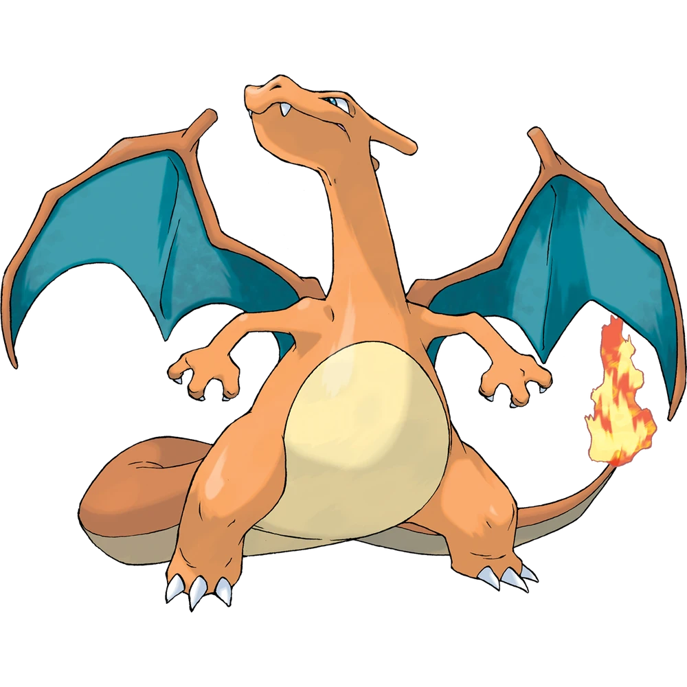

포켓몬스터 시리즈의 1세대 게임이자 시리즈의 첫 작품. 1996년 2월 27일 발매. 프로듀서는 이시하라 츠네카즈, 미야모토
시게루, 디렉터는 타지리 사토시.
기종은
게임보이다.
해외에서는 포켓몬스터 레드·블루로 발매하였다.
발매일: 1996년 2월 27일(한국-미발매)
| 파이리 ヒトカゲ Charmander |
No.0004 |
|---|---|
| 타입 | 분류 |
| 불꽃 | 도룡농포켓몬 |
| 특성 | 숨겨진 특성 |
| 맹화 | 선파워 |
| 울음소리 | |
파이리: Fire + 꼬리
|  | ||
|---|---|---|
| 파이리 | 리자드 | 리자몽 |